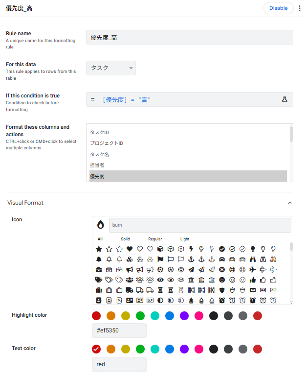
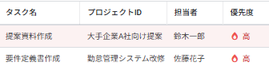
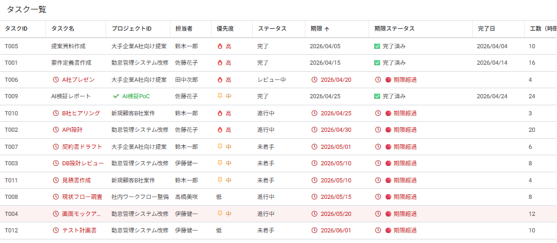
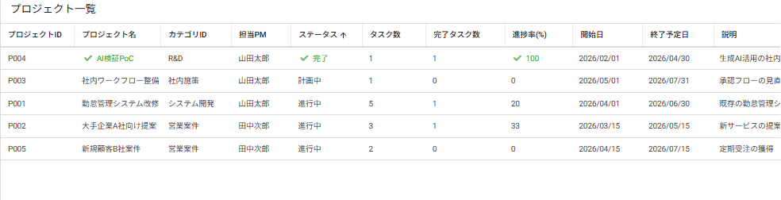

条件付き書式とUXの仕上げ
6-1 この章で作る5つのFormat Rule
本章では、第5章までで構築したアプリに 視覚的な分かりやすさ を加えていきます。中級編で学んだ Format Rules の応用編として、優先度・期限・ステータスに応じた色分け を実装し、業務アプリらしい完成度に仕上げます。
■ 中級編との違い
| レベル | Format Rulesの使い方 | 例 |
|---|---|---|
| 中級編 | 単一カラムの値で色分け | 承認ステータス = "申請中" → 黄色 |
| 上級編 | Virtual Columnと組み合わせた動的書式 | 期限ステータス(VC)が "期限超過" → 赤背景 進捗率(VC)に応じてグラデーション |
■ 本章で作る5つの Format Rule
| No. | Rule名 | テーブル | 役割 |
|---|---|---|---|
| 1 | 優先度_高 | タスク | 優先度=高のタスクを赤色でハイライト |
| 2 | 優先度_中 | タスク | 優先度=中のタスクをオレンジ色で表示 |
| 3 | 期限超過_未完了 | タスク | 期限超過のタスクに🚨アイコン+赤背景で警告表示 |
| 4 | プロジェクト_完了 | プロジェクト | 完了プロジェクトを緑で表示 |
| 5 | プロジェクト_中止 | プロジェクト | 中止プロジェクトをグレーアウト |
- 一目で重要度がわかる:高優先度のタスクが即座に視認できる
- 期限管理を視覚化:期限超過を見落とさない色設計
- 状態の階層を表現:完了・進行中・中止などの状態を一貫した色で
- 業務ユーザーの認知負荷を下げる:アイコンと色で瞬時に情報を伝達
6-2 タスクの優先度を色分け表示
タスクテーブルの 優先度(高/中/低)に応じて、行の 背景色 を変えます。優先度の高いタスクが一目で識別できるようにします。
■ ① 優先度=高 のFormat Rule
- Rule name
優先度_高- For this data
- タスク
- If this condition is true
[優先度] = "高"- Format these columns
- 優先度
- Icon
- 🔥(fire)
- Highlight color
#ef5350(赤系)- Text color
red(赤)
■ ② 優先度=中 のFormat Rule
- Rule name
優先度_中- For this data
- タスク
- If this condition is true
[優先度] = "中"- Format these columns
- 優先度
- Icon
- 📌(thumbtack)
- Highlight color
#ffb74d(オレンジ系)- Text color
orange(オレンジ)
■ 作成手順
中級編で扱った Format Rule の作成手順と同じです。確認のため再掲します。
左メニューの 📱 Views アイコン をクリックし、サブメニューから 「Format Rules」 を選択します。
右パネル上部の 「+」(New Format Rule)をクリックします。
上記の設定内容に従って入力します。
Save をクリック。同様に「優先度_中」も作成します。


6-3 期限ステータスでタスクをハイライト
第4章で作成した 期限ステータス Virtual Column を活用して、期限超過の未完了タスクを赤背景で強調 します。これにより、PMが優先して対応すべきタスクを瞬時に把握できます。
■ ③ 期限超過_未完了 のFormat Rule
- Rule name
期限超過_未完了- For this data
- タスク
- If this condition is true
AND([残日数] < 0, [ステータス] <> "完了")- Format these columns
- タスク名 / 期限 / 期限ステータス
- Icon
- 🚨(siren) または ⏰(clock)
- Highlight color
#c62828(濃い赤)- Text color
red(赤)
■ 条件式の解説
AND(
[残日数] < 0, ← 残日数がマイナス(期限を過ぎている)
[ステータス] <> "完了" ← かつ、完了していないタスク
)条件②で 「完了タスクは除外」 しているのがポイントです。完了済みタスクが期限を過ぎていても、それは過去の話なのでハイライト不要です。「これから対応が必要なタスクだけ」 を強調するのが UX のポイントです。
[残日数](Virtual Column)を条件式に使っています。Virtual Column は自動再計算されるため、日付が変わるたびに該当行も自動で切り替わる という大きなメリットがあります。今日の時点で期限超過のタスクが、明日には増えているかもしれません。
■ 優先順位の関係
同じタスクが 優先度=高 かつ 期限超過 の場合、どちらの書式が適用されるかは、Format Ruleの並び順で決まります。
| パターン | 適用される書式 |
|---|---|
| 優先度=高 のみ | 優先度_高 のルール(オレンジ寄りの赤) |
| 期限超過 のみ | 期限超過_未完了 のルール(濃い赤) |
| 両方該当 | 両方の書式が重ねて適用される(優先度_高でアイコン+色、期限超過_未完了で背景色+アイコン) |
6-4 プロジェクトのステータス別書式
プロジェクトテーブルにも、ステータスに応じた書式を設定します。完了と中止のプロジェクトを、進行中とは異なる見た目にして、一覧で識別しやすくします。
■ ④ プロジェクト_完了 のFormat Rule
- Rule name
プロジェクト_完了- For this data
- プロジェクト
- If this condition is true
[ステータス] = "完了"- Format these columns
- プロジェクト名 / ステータス / 進捗率
- Icon
- ✓(check)
- Highlight color
#66bb6a(緑系)- Text color
green(緑)
■ ⑤ プロジェクト_中止 のFormat Rule
- Rule name
プロジェクト_中止- For this data
- プロジェクト
- If this condition is true
[ステータス] = "中止"- Format these columns
- プロジェクト名 / ステータス
- Icon
- 🚫(ban)
- Highlight color
#bdbdbd(グレー)- Text color
#555555(濃いグレー)
■ 色彩設計のセオリー
業務アプリでよく使われる「ステータス色のセオリー」があります。本マニュアルもこれに準拠しています。
| ステータス | 推奨色 | 理由 |
|---|---|---|
| 計画中 | 水色 | これから始まる、フレッシュな印象 |
| 進行中 | 白(色なし) | 現在のアクティブ状態、何も装飾しない |
| 完了 | 緑 | 達成・成功を意味する色 |
| 中止 | グレー | 非アクティブ、グレーアウトを示す |
| エラー/超過 | 赤 | 警告・緊急対応が必要 |
6-5 テーブルアイコンとアプリの仕上げ
最後に、アプリ全体の見た目を整える仕上げ作業を行います。テーブルのアイコン設定、アプリ名のロゴ設定、テーマカラーの調整など、業務アプリらしい完成度に仕上げます。
■ ① テーブルアイコンの設定
左メニューに表示される各テーブルのアイコンを、内容に合ったものに変更します。デフォルトは全テーブル同じ「データベース」アイコンですが、テーブルごとに分けると視認性が上がります。
| テーブル | 推奨アイコン | キーワード(検索用) |
|---|---|---|
| メンバー | 👤 user | user / users / person |
| カテゴリ | 🏷️ tag | tag / tags / label |
| プロジェクト | 📋 clipboard | clipboard / folder / briefcase |
| タスク | ✅ check | check / tasks / list-check |
■ 設定手順
左メニューの 📱 Views アイコン をクリックします。
対象のビュー(たとえば メンバー)を選択し、設定パネルの Display セクションを展開します。
Icon 欄のアイコン選択エリアで、上記のキーワード(例: user)を検索してアイコンを選択します。
Save をクリック。他のビューも同様に設定します。
■ ② アプリ名とブランディング設定
アプリ全体のテーマカラーやアイコンを設定します。
左メニューの ⚙ Settings アイコン(歯車)をクリックします。
サブメニューから 「Theme & Brand」 を選択します。
Theme で light または dark を選びます。通常の業務アプリでは light が見やすいです。
Primary color を設定します。パレットから選ぶか、「+ Custom」 をクリックして #c62828(赤系)を入力します。
必要に応じて Header & Footer → Style で、ヘッダーのスタイル(3種類のアイコンから選択)を変更します。
Save をクリック。プレビューに反映されます。
■ ③ アプリ情報の設定
Settings → 「Information」 を選択します。
App name が「プロジェクト管理アプリ」になっていることを確認します。
Short description に簡潔な説明を入力します(例:「プロジェクトとタスクを管理する社内アプリ」)。
アプリのロゴを設定したい場合は、Settings → 「Theme & Brand」 に戻り、App logo 欄にロゴ画像をアップロードします(任意)。
Save をクリック。
6-6 動作確認とまとめ
■ 確認チェックリスト
- タスクの優先度=高 の行が赤系の色でハイライトされている
- タスクの優先度=中 の行がオレンジ系の色で表示されている
- 期限超過の未完了タスクが濃い赤背景で目立つように表示されている
- プロジェクト=完了 の行が緑系で表示されている
- プロジェクト=中止 の行がグレーで表示されている
- 5つのテーブルすべてに、内容に合ったアイコンが設定されている
- アプリの Theme と Primary color が設定されている
- Settings → Information でアプリ名と説明が設定されている
■ プレビューで確認


■ この章で作成した Format Rule 一覧
| No. | Rule名 | テーブル | 条件式 | 主な色 |
|---|---|---|---|---|
| 1 | 優先度_高 | タスク | [優先度] = "高" | 赤系 |
| 2 | 優先度_中 | タスク | [優先度] = "中" | オレンジ |
| 3 | 期限超過_未完了 | タスク | AND([残日数] < 0, [ステータス] <> "完了") | 濃い赤 |
| 4 | プロジェクト_完了 | プロジェクト | [ステータス] = "完了" | 緑 |
| 5 | プロジェクト_中止 | プロジェクト | [ステータス] = "中止" | グレー |
■ 第6章のまとめ(中級編との違い)
| No. | 上級編で新しく扱ったポイント | 使った仕組み |
|---|---|---|
| 1 | Virtual Columnを条件式に活用 | [残日数]を使った動的判定 |
| 2 | 複数条件のAND結合 | AND(...)で「期限超過かつ未完了」 |
| 3 | 優先順位を考えた色設計 | ルールの並び順 + 色の重ね合わせ |
| 4 | 業務アプリらしい色のセオリー | 計画中=水色 / 完了=緑 / 中止=グレー |
| 5 | アプリ全体のブランディング | Theme / アイコン / 説明文の設定 |